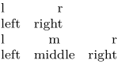

Syntax (autogenerated)
| \definetabulate[...][...][|...|] | |
| [...] | name |
| [...] | name |
| [|...|] | template |
Syntax
| \definetabulate[...][...][...] | |
| [...] | name |
| [...] | name of variant or sub-part |
| [...] | text |
Description
Example
-
\definetabulate [whatever] [|l|r|] \definetabulate [whatever][else] [|l|c|r|] \startwhatever \NC l \NC r \NC \NR \NC left \NC right \NC \NR \stopwhatever \startwhatever[else] \NC l \NC m \NC r \NC \NR \NC left \NC middle \NC right \NC \NR \stopwhatever % possible since the beta of 2012-10-17 % \startwhatever[else][format={|c|c|c|c|}] % \NC l \NC m \NC m \NC r \NC \NR % \NC left \NC middle \NC middle \NC right \NC \NR % \stopwhatever \stoptext
- 
See also
- \setuptabulate
- \starttabulate
- \defineparagraphs for paragraphs placed side-by-side in a tabular style.
Help from ConTeXt-Mailinglist/Forum
All issues with: